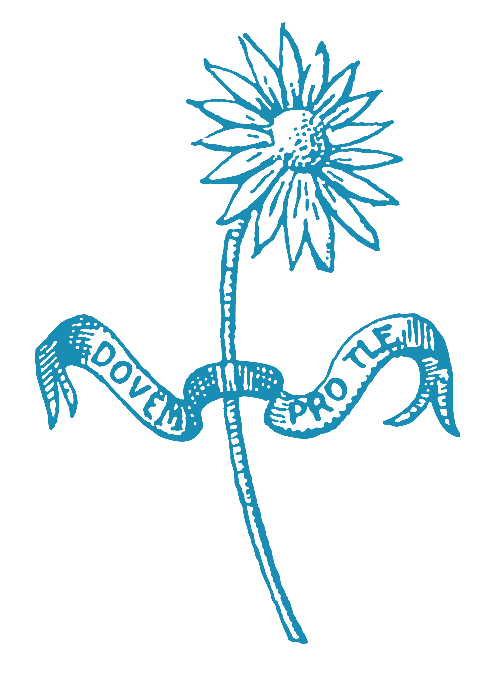

Various Language notes on natural, synthetic and programming languages.
Welcome to the Language Portal, the goal of these pages is to host a few resources, summaries and notes from my own language studies.
Kolik jazyků znáš,
tolikrát jsi člověkem.
—Tomáš Garrigue Masaryk
principles of learning
- Space learning over time: Spaced schedules of studying and testing produce better long-term retention than a single study session or test.
- Worked example solutions problem solving exercises: Presenting the students step-by-step solutions to problems should be intermixed with having the students solve the problems by themselves.
- Combine graphics with verbal descriptions: Materials presented in verbal, visual and multimedia form are richer representations than those with a single modality or medium.
- Abstract and concrete representations of concepts: An understanding of an abstract concept improves with multiple and varied concrete examples.
- Use quizzing to promote learning: Testing enhances learning, particularly when the tests are aligned with important content.
- Help students allocate study time effectively: Students need to allocate more time on difficult material and to have repeated practice for some concepts and skills. Outlining, integrating and synthesizing information produces better learning than re-reading materials or other more passive strategies.
- Ask deep explanatory questions: Students benefit more from asking and answering deep questions that elicit explanations (e.g., why, why not, how, what if) than shallow questions (e.g., who, what, when, where).
- Contiguity: Ideas that need to be associated should be presented contiguously in space and time.
- Perceptual-motor grounding: Students learn better when teachers link concepts to concrete perceptual motor experiences, particularly at early stages of learning.
- Generation effect: Learning is better when learners actively produce answers, rather than merely recognize answers as in multiple-choice questions.
- Stories and example cases: Learners tend to remember stories and example cases better than didactic facts and abstract principles.
- Feedback: Students benefit from feedback on their performance in a learning task, with the timing depending on the task. Learning incorrect information can be reduced when students are given immediate feedback.
- Manageable cognitive load: Learning materials should not overload working memory.
- Cognitive disequilibrium: Deep reasoning and learning is stimulated by problems that create cognitive disequilibrium, such as obstacles to goals, contradictions, conflict and anomalies.
- Cognitive flexibility: Students’ cognitive flexibility improves when they are presented with multiple viewpoints that link facts, skills, procedures and deep conceptual principles.
- Goldilocks principle: Assignments should not be too hard or too easy, but at the right level of difficulty for each student’s skill and prior knowledge.
- Anchored learning: Learning is deeper and students are more motivated when the materials and skills are anchored in real-world problems that matter to the learner.
dictionary
- Anthropomorphism: Attributing distinctly human characteristics to nonhuman processes.
- Antifragile: Some things benefit from shocks, they thrive and grow when exposed to volatility, randomness, disorder, stressors, risk, and uncertainty.
- Parsimony: Refers to the quality of economy or frugality in the use of resources.
- Lateralus: The affliction of illusion of inescapable cyclicality. Example: The failure to recognize one's growth, inability to dream of unprecedented things, ceding to self-reinforcing systems, being jaded to hope, waiting for nonexistent chickens to hatch from nonexistent eggs.
- Rationality: Characteristic of thinking and acting optimally.
- Epistemology: A theory of knowledge, especially with regard to its methods, validity, and scope, and the distinction between justified belief and opinion.


incoming(2): lifestyle faqs devine lu linvega
Last update on 17I13, edited 195 times. +686/1096fh----+-
- 14B14 — Started learning Russian
- 08I09 — Started learning Japanese